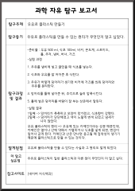
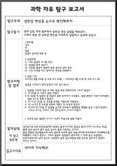
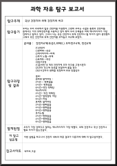
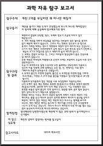
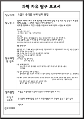

탐구 보고서
밑에 이미지를 클릭하면 저장할 수 있어요!

-탐구동기
우유로 플라스틱 만들기
-탐구동기
우유로 플라스틱을 만들 수 있는 원리가 무엇인지 알고 싶었다.
탐구 과정 및 결과
-준비물:우유 500 ml, 식초 100ml, 비커, 온도계, 스포이드, 틀, 주걱, 냄비, 버너, 거즈
-실험과정:
1.우유를 냄비에 넣고 끓었을 때 식초를 넣는다.
2. 식초와 우유를 잘 저어준 후 식힌다......

-탐구동기
삼투압 현상을 눈으로 확인해보자
-탐구동기
전에 있던 과학 캠프에서 삼투압 현상 실험을 해보았다. 그래서 복습 겸 삼투압 현상을 자세하게 실험하고 공부해 보았다.
탐구 과정 및 결과
-준비물: 식초, 자, 달걀, 달걀이 들어갈 만한 컵
-실험과정:
1.자로 달걀의 크기를 잰다.
2. 달걀을 컵에 넣는다......

-탐구동기
국산 건전지과 외제 건전지의 비교
-탐구동기
국산 건전지와 국내 건전지가 별 차이가 없다고 생각해서 두개를 모아놓고 비교해보았다.
탐구 과정 및 결과
-준비물:건전지 4개, 꼬마전구 4개, 전선 4개
-실험과정:
1.준비한 4개의 건전지에 꼬마전구를 고정시킨다.
2. 꼬마전구에 전선을 연결하여 불을 켰다......

-탐구동기
계란 2개를 부딪히면 왜 하나만 깨질까?
-탐구동기
계란을 옮기다 계란 두개가 부딪혔는데 보니까 하나만 깨져있었다. 이 원리에 대해 궁금해져 탐구해보기로 했다.
탐구 과정 및 결과
-실험과정:
1.두개의 계란을 약하게 부딪혀보았다.
2.대부분의 경우 별다른 충격이 없어 깨지지 않았다.
3.어느 한쪽의 경도보다 큰 힘으로 충격을 가한다.......

-탐구동기